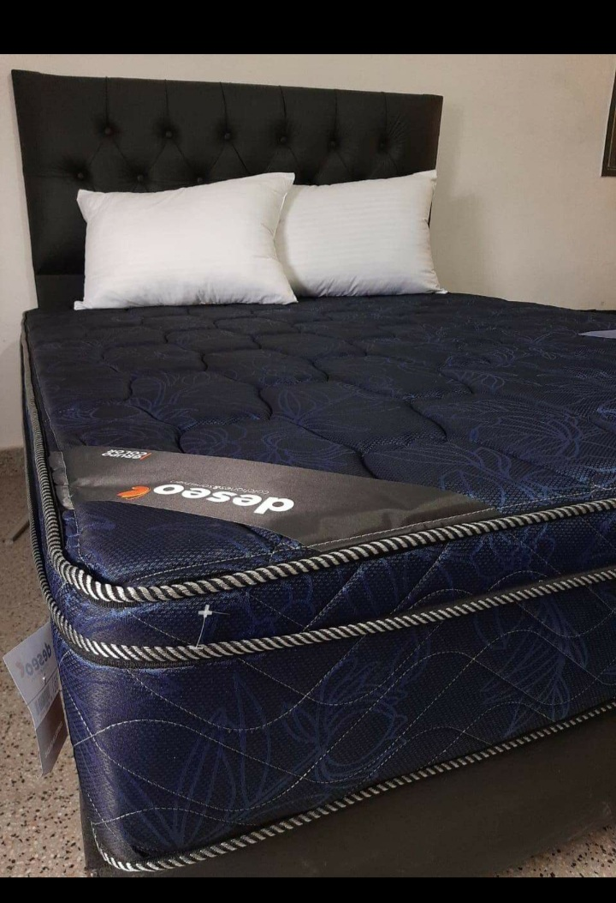

respaldos de eco cuero angus se pueden fabricar dentro de la medida de 0.80 x 1.30 a 2.10 x 1.30, dentro del catalogo de colores que estan exividos en nuetra galeria.
los respaldos en material pana tambien se pueden fabricar dentro de la medida de 0.80 de ancho x 1.30 de alto ( 1 plaza) a 2.10 de nacho x 1.30 de alto ( king). consultar en el menu de contacto el catalogo de colores.
este material cuenta con una textura suave y flexible, ademas por carecterizarce por su durabilidad, debido a su acabado de ceroso, el cuero toma un aspecto elegate y agradual cambio de color.este tipo de respaldo se puede fabricar de las siguientes medidas:
| cuero tex 0.80 x 1.30 | cuero tex 0.90 x 1.30 |
| cuero tex 1.00 x 1.30 |
| cuero tex 1.20 x 1.30 |
| cuero tex 1.40 x 1.30 |
| cuero tex 1.60 x 1.30 |
| cuero tex 1.80 x 1.30 |
| cuero tex 2.00 x 1.30 |
las bos de sommier vienen tapizados en eco cuero angus y forrados en guata.se puede solicitar las sigueintes medidas.
| box 0.80 x 1.90 |
| box 0.80 x 2.00 |
| box 1.00 x 1.90 |
| box 1.00 x 1.90 |
| box 1.00 x 2.00 |
| box 1.20 x 1.90 |
| box 1.40 x 1.90 |
| box 1.40 x 2.00 |
mesas ratoneras con banquetas puff
Las mesas ratonas, también llamadas de centro o auxiliares son uno de esos elementos imprescindibles en cualquier salón. Por un lado, puede aportar estilo y servir toque de color en una decoración. Y por otro son muy prácticas